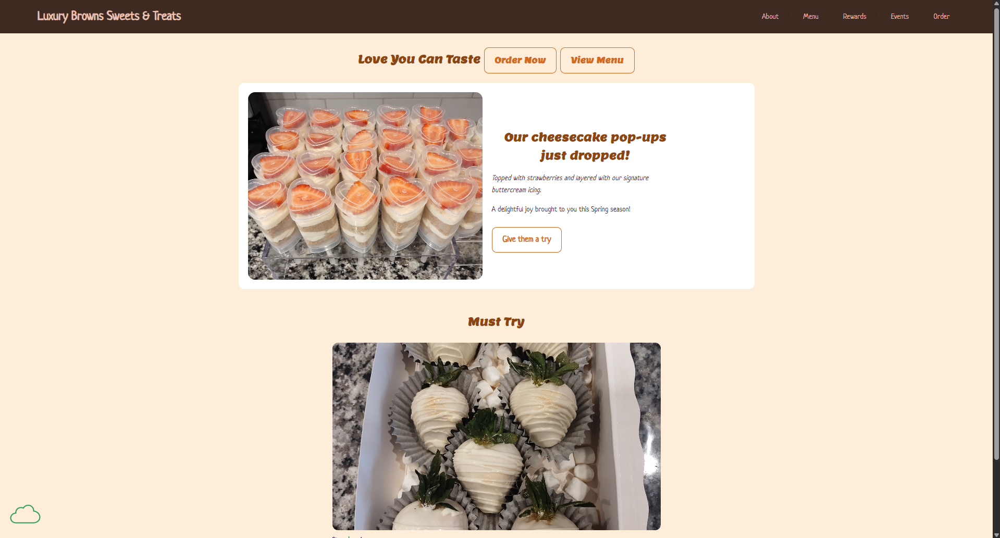

Peer Review 1
Green, Alana

Feedback
- Link in ITIS3135 site header leads directly to client site: Yes
- No spaces or upper-cases in file or folder names, including scripts, images, etc.: Folder names meet this requirement. There is at least one image and one script with a file name that contains upper-case characters.
- Design
- Page has sufficient contrast and font sizing to be easy to read: Yes
- Site colors and fonts are from the linked default stylesheet: Yes
- CRAP
- Contrast: Ratio of 8.59:1 passes WCAG AA and WCAG AAA standards. No contrast errors.
- Repetition: Use of repeated design elements gives the site a uniform feel.
- Alignment: Good alignment, though main section paragraphs feel a little out of place on wider screens.
- Proximity: Grouping of like content on the pages is done well. Proximity of one section to another is good on narrower screens, but, on wider screens, there is a lot of unused space.
- Page Elements
- Header: Yes
- Main: Yes
- Footer: Yes
- Header
- Site/Brand header with text in an h1 element: Yes
- Page name not included in header: No
- Main
- Starts with name of page as an h2 element: No
- Does not include name of site/brand: Does not
- Page has brand tagline: No
- Footer
- Has menu for user's pages: No
- Has Accumulus validation link and validates: Has Accumulus link. All pages validate.
- Specific Client Site Assignment Requirements
- Minimum 5 pages with content: Yes
- CSS & JS in separate files: Yes
- Home page named index.html: Yes
- Consistent and working navigation bar: Yes